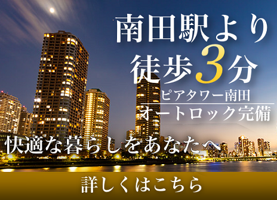
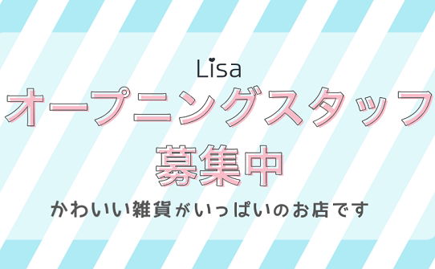
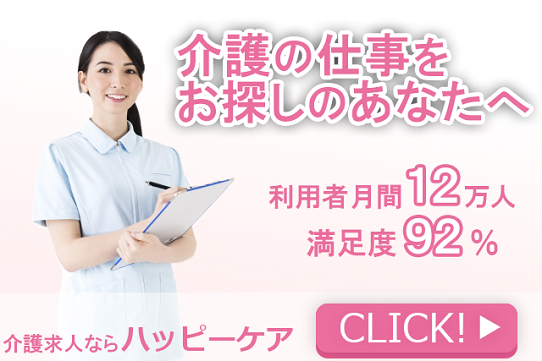
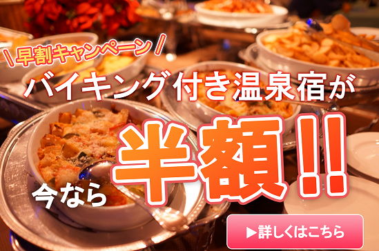

架空のバナー制作
制作した架空のバナーです。
各制作期間：～1日間
制作範囲：デザイン
使用ツール：Photoshop
-

マンションの広告です。
明朝体の文字や白・金の配色で高級感を出しました。
アピールポイントやキャッチコピーがより効果的に伝わるよう、Z型に動く視線の流れを特に意識し配置しています。 -

雑貨屋の求人広告です。
20代の女性をターゲットに、パステルカラーのかわいらしいデザインを目指しました。 -

介護職の求人広告です。
介護の仕事を探す20～30代の女性をターゲットに、親しみやすい人物の画像と暖色でデザインを行いました。 -

旅行会社の広告です。
バイキングを主な訴求内容としたため全体を食欲促進の暖色でまとめました。
全体を橙色としつつ、クリックを促すボタンに
アイキャッチのアクセントカラーとして桃色を使用しました。